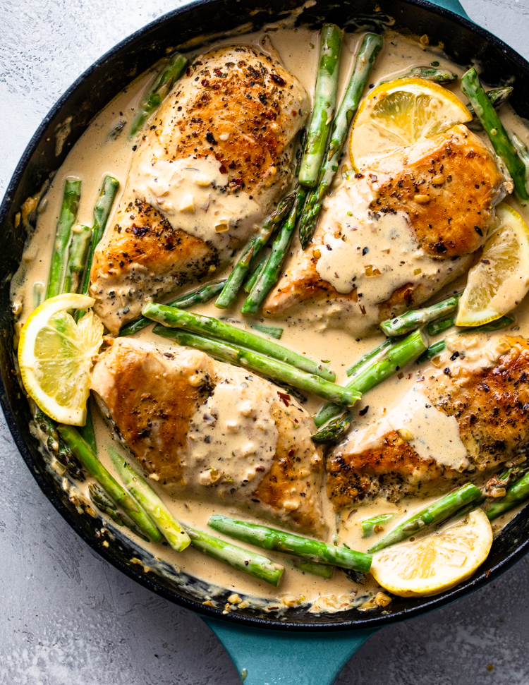

Creamy Chicken Asparagus

Description
This recipe will make 4 servings of pork fried rice, and I encourage following the instructions exactly.
If you must, you dont need the lemon juice, but it does add just a little bit of flavor to really
bring the recipe together for you. This is one of my favorites, I make it a few times a month as it's
easy, cheap, and fast.
When reheating this recipe, I suggest covering the bowl you choose with a wet paper towel in order
to help the rice become fluffy again instead of stiff.
Ingredients
- 4 medium chicken breast
- 1 tablespoon italian seasoning
- 1/2 tsp EACH: crushed red pepper, salt, pepper
- 1 tablespoon olive oil
- 2 tablespoons butter
- 1 pound asparagus
- 1/2 cup onion, minced
- 4 cloves garlic, minced
- 1 cup heavy cream
- 2 tablespoons lemon juice
- 1/4 cup parmesan
Steps
- Season chicken with Italian seasoning, crushed chili pepper,
salt & pepper. Add 1 tablespoon olive oil to a large skillet
over medium heat. Add chicken to the pan and cook for 5-6 minutes
per side. Remove from skillet and set aside.
- Add butter onion, and asparagus to the skillet and cook for 2-3
minutes, or until just tender. Add the garlic and cook for just under a minute.
- Add heavy cream, lemon juice, and parmesan cheese; stir to combine. Return chicken
to the pan and simmer 3-4 minutes or until the sauce has thickened. Taste and adjust
salt & pepper if needed. If the sauce is too thick, add 1/4 cup water, chicken stock or broth.
Home